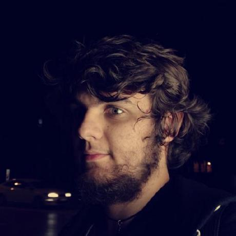

I'm Neven Marić
I'm an eighteen year old full-stack developer.
Currently based in Osijek, Croatia
Currently based in Osijek, Croatia
I've always had a passion to create new things, provide unique experiences,
and developing full-stack applications pushes my work to the next levels with each project,
always putting quality at the first place.
and developing full-stack applications pushes my work to the next levels with each project,
always putting quality at the first place.

WORK EXPERIENCE
MONO SOFTWARE
Aug 2021 - Oct 2021
Learning the fundamentals of backend and frontend and the technology practices of MONO Software.
The BE part of the internship focused on ASP.NET, Jwt Authentication, Automapper and DI. We were split into groups and had to make our own API with our database, which we created in SQL and hosted on Azure.
The FE part of the internship focused on ReactJS and using it together with Mobx. We went from the basics to creating a website with admin controls that will be utilising our group’s API.
The BE part of the internship focused on ASP.NET, Jwt Authentication, Automapper and DI. We were split into groups and had to make our own API with our database, which we created in SQL and hosted on Azure.
The FE part of the internship focused on ReactJS and using it together with Mobx. We went from the basics to creating a website with admin controls that will be utilising our group’s API.
GAUSS DEVELOPMENT
Aug 2021 - Oct 2021
Learning the fundamentals of Swift, SwiftUI and storyboards.
Contributed and learnt on banking projects with complex backend and connection logic.
Mostly built UI screens by transfering Figma designs into usable Swift Storyboards.
Contributed and learnt on banking projects with complex backend and connection logic.
Mostly built UI screens by transfering Figma designs into usable Swift Storyboards.
OSIJEK031
Aug 2020 - Jan 2021
I was an event and journalist photographer for Osijek031.
The equipment I was using was my own; Sony A7RIV camera, Sony 70-200 f2.8, Tamron 28-75 f2.8, DJI Mavic 2 Pro.
-
Some of the galleries I’ve shot:
-> 49. Zmajada - Zmajevi nad gradom
-> End Polio Family Run Osijek, 2020
-> Maglovita šetnja gradom
-> Paljenje svijeća za Vukovar 2020
-> Šetnja gradom, prosinac 2020
The equipment I was using was my own; Sony A7RIV camera, Sony 70-200 f2.8, Tamron 28-75 f2.8, DJI Mavic 2 Pro.
-
Some of the galleries I’ve shot:
-> 49. Zmajada - Zmajevi nad gradom
-> End Polio Family Run Osijek, 2020
-> Maglovita šetnja gradom
-> Paljenje svijeća za Vukovar 2020
-> Šetnja gradom, prosinac 2020